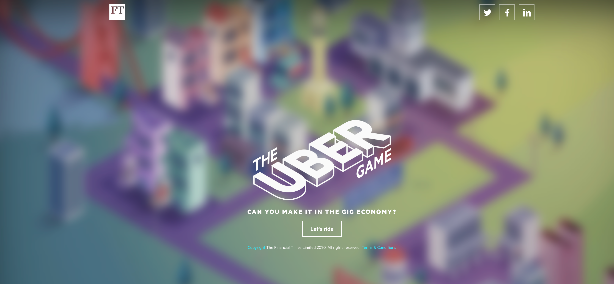
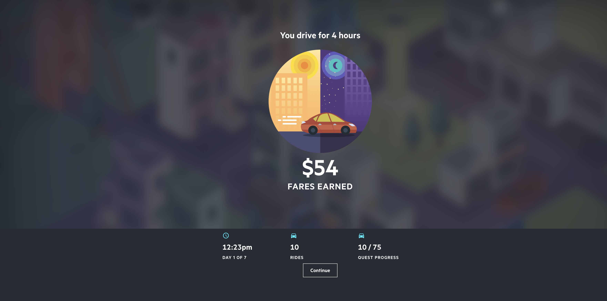
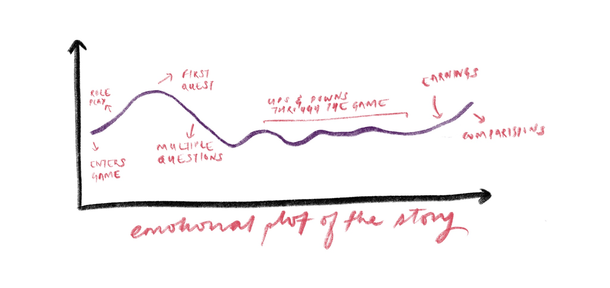
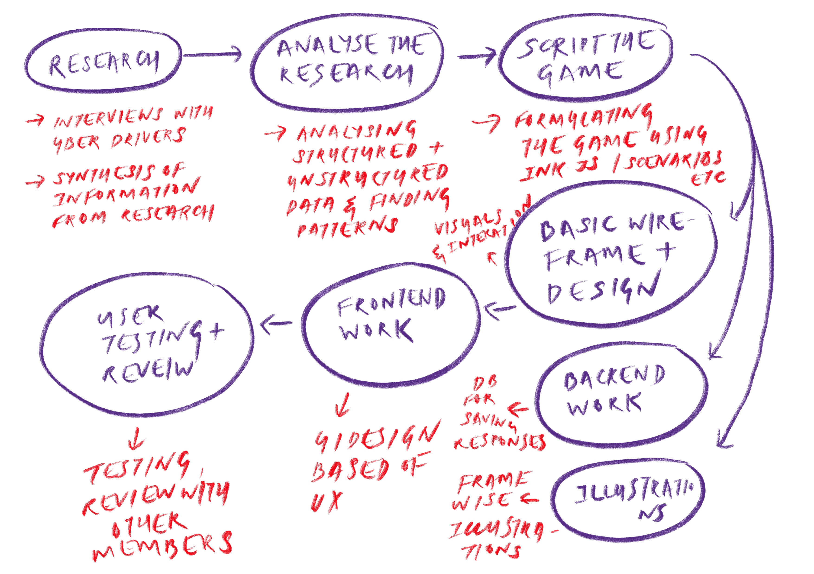

Decoding DataViz
As a part of learning about DataViz and information design, each student chose an article to critique and learn from. I chose The Uber game that was designed and developed by Financial Times and published on October 2017.

I would like to clarify that I'm no expert. Through this exercise, I'm trying to learn about work that is published in newsrooms by understanding their audiences, constraints and the choices for the
The news game helps readers empathise with Uber drivers by asking them select certain questions about work and personal life. The process of selection makes the reader feel that he's in control. The questions were formulated based on a qualitative research study with Uber drivers. As the game is based on reality, the reader is able to feel the conflicts of the situation. Games tend to shrink the complexity of the subject, making it something that one could get into quickly. The article doesn't cater to the facts of the situation. However, it makes the rules of the system evident which helps a reader examine and introspect it.

It's rich and heavy visual experience which reminds us of old school video games. The isometric illustrations with a bright colour palette by Rebbeca Turner make the article approachable and attractive. It entices the reader to play it at the first view. However, as we go deep into the game, illustrations seem to get slightly repetitive. The viewers attention span is mainly on the changing questions, the increase of decrease in the money and change in time which is showcased on the top left. As a reader, I tend to ignore the illustrations if it isn't apt the the question. At times,the beautifully illustrated buildings and the cityscape seem to over power the situation. But on a second thought, this might be just for me and someone who's new to the field of illustrations and visual arts might find it appealing and interesting. The illustrations tend to retain the feel of an old school video game.

The screen above appears occasionally that gives the reader an understanding of the progress he's made over time. The use of colour is apt and helps me focus on the information that I require to proceed. We see the data represented along with an icon at most places. Visual encodings are fairly less in this interactive piece. The information has been presented in a straightforward manner to avoid too much of effort from the reader's end to understand the article.
The narrative incorporates the reader by making them choose between personal commitments, work and other budgeting related questions. The story enfolds in a chronological order which are the events that occur in an Uber driver's life. The story begins when the reader is asked to get into a role play where he has to imagine that he his a full time Uber driver with two kids to support and a $1000 mortgage payment due in a week. The reader's conscience is used as a measuring device since there are no right or wrong choices. Tried creating a chart based on Kurt Vonnegut's video on Shapes of Stories.

One might tend to lose interest due to the multiple choice of questions and continuous clicking as one goes through the story. One of the articles that capture the making of The Uber Game said that 70 percent of the players had finished the game which is typically higher than the engagement with interactive article on the web. The use of interactivity to represent the changing numbers in time and money motivate the reader through the game.
There isn't a direct piece of information that one can take away after going through the game regarding the situation of Uber drivers. What I liked about the game is how they present my choices along with a comparison of what others did in percentages. Each readers experience and outcome would be different based on the choices made. The impact or the take-way from this piece might be hard to measure. However, it tends to have an emotional impact on the reader.
Use of sound can be a great way to help users get into the situation. Maybe I would try to reduce the illustrations through the middle and the end of the story with a focus towards the questions and the interactions. A progress bar showcasing how many more such questions are left to answer might help some readers stay hooked to the game. Overall a one week challenge seemed too long and I would try to reduce the time frame.
This article was headed by Robin Kwong, Head of Digital Delivery at the Financial Times then. It consisted of a multi diverse team that included a data reporter who writes and codes (David Blood), a UX designer, an Illustrator (Rebecca Turner), a writer who codes(Leslie Hook), a data visualization journalist (Joanna S Kao) a newsroom developer(Ændrew Rininsland).I tried sketching out the process the team might have followed to on this piece.

Sources:
https://robinkwong.com/newsgames/
https://source.opennews.org/articles/how-and-why-financial-times-made-uber-game/
https://www.youtube.com/watch?v=LKRoDyggsII
https://news.ycombinator.com/item?id=15458957